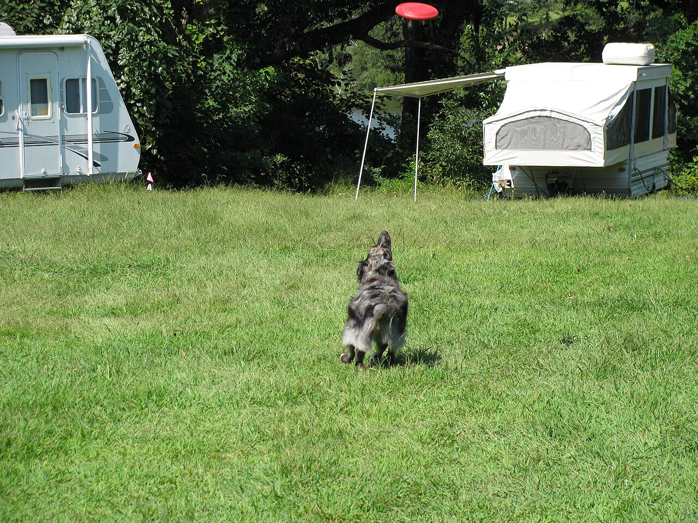

A Working Brain in a Family Dog's Body

Photo: Hermankickass / Wikimedia Commons (CC0)
Aussies are consistently ranked among the smartest dog breeds, and it shows in everything they do. They pick up commands fast, solve problems on their own (sometimes to your frustration — a bored Aussie will find a "job," and it might be redecorating your couch), and thrive when given consistent structure and mental challenges.
Herding Instinct
This is a breed built to move livestock, and that instinct doesn't switch off just because there are no sheep around. Many Aussies will try to herd children, other pets, joggers, or bicycles by circling, nipping at heels, or blocking paths. It's not aggression — it's instinct — but it needs to be channeled through training and outlets like herding trials or structured play.
Family Bond
Aussies bond intensely with their people. They tend to be "velcro dogs," following their favorite family member from room to room, and they do best when included in daily life rather than left alone for long stretches. This devotion makes them wonderful family dogs, but it also means separation anxiety can be a real issue if it isn't addressed early.
Mental Stimulation Needs
A tired Aussie is a good Aussie — and "tired" has to include the brain, not just the legs. Puzzle toys, nose work, obedience practice, and training new tricks are just as important as physical exercise. Without it, that intelligence turns into digging, barking, or chewing.
Reserved with Strangers
Unlike some retrievers who greet every stranger like a long-lost friend, Aussies are naturally more reserved and watchful around people they don't know. This makes them excellent watchdogs, but it also means early socialization is essential to keep that wariness from tipping into shyness or over-protectiveness.